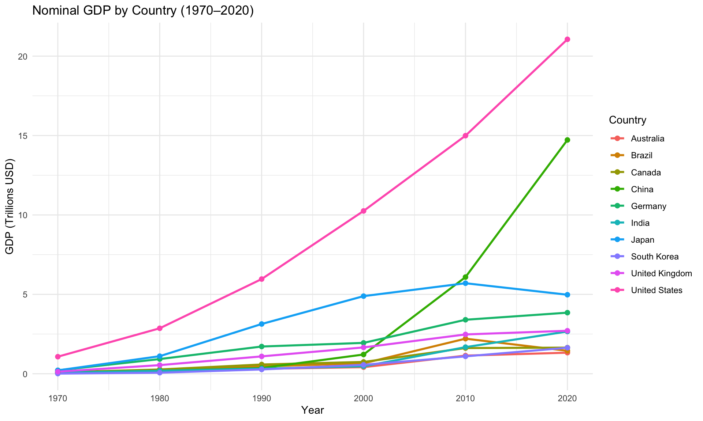

Code
library(tidyr)
library(dplyr)
library(ggplot2)This dataset contains nominal GDP (in millions USD) for 10 countries across six decades (1970–2020). The data originates from the Wikipedia page List of countries by past and projected GDP (nominal), which compiles figures from the IMF World Economic Outlook database.
The dataset is untidy because the year columns (1970, 1980, …) are values of a variable, not variable names.
library(tidyr)
library(dplyr)
library(ggplot2)raw_gdp <- read.csv("https://raw.githubusercontent.com/qingquan-li/Data607/refs/heads/main/week6/data/dataset1_gdp.csv",
check.names = FALSE)dim(raw_gdp)[1] 10 7head(raw_gdp) Country 1970 1980 1990 2000 2010 2020
1 United States 1073300 2862500 5963100 10252300 14992100 21060500
2 China 92603 191149 360858 1211347 6087164 14722731
3 Japan 212609 1105386 3132818 4887520 5700098 4975415
4 Germany 215022 924861 1714441 1943143 3399589 3846414
5 United Kingdom 130672 542885 1093169 1657816 2475244 2707744
6 India 63504 186325 320979 468395 1675615 2660245str(raw_gdp)'data.frame': 10 obs. of 7 variables:
$ Country: chr "United States" "China" "Japan" "Germany" ...
$ 1970 : int 1073300 92603 212609 215022 130672 63504 42328 86303 33985 8937
$ 1980 : int 2862500 191149 1105386 924861 542885 186325 235025 268907 150133 65389
$ 1990 : int 5963100 360858 3132818 1714441 1093169 320979 461952 582748 310782 270405
$ 2000 : int 10252300 1211347 4887520 1943143 1657816 468395 655422 742293 415222 561633
$ 2010 : int 14992100 6087164 5700098 3399589 2475244 1675615 2208872 1617343 1142251 1094499
$ 2020 : int 21060500 14722731 4975415 3846414 2707744 2660245 1444733 1645423 1327836 1637896The raw dataset has 10 rows (one per country) and 7 columns (Country + 6 year columns). Each year column stores GDP values — this is a classic wide format.
tidy_gdp <- raw_gdp |>
# Step 1: Reshape from wide to long format
pivot_longer(
cols = -Country,
names_to = "year",
values_to = "gdp_millions"
) |>
# Step 2: Convert year from character to integer
mutate(year = as.integer(year)) |>
# Step 3: Rename columns to lowercase snake_case
rename(country = Country) |>
# Step 4: Remove any rows with missing GDP values
drop_na(gdp_millions) |>
# Step 5: Sort by country and year for readability
arrange(country, year)head(tidy_gdp, 12)# A tibble: 12 × 3
country year gdp_millions
<chr> <int> <int>
1 Australia 1970 33985
2 Australia 1980 150133
3 Australia 1990 310782
4 Australia 2000 415222
5 Australia 2010 1142251
6 Australia 2020 1327836
7 Brazil 1970 42328
8 Brazil 1980 235025
9 Brazil 1990 461952
10 Brazil 2000 655422
11 Brazil 2010 2208872
12 Brazil 2020 1444733str(tidy_gdp)tibble [60 × 3] (S3: tbl_df/tbl/data.frame)
$ country : chr [1:60] "Australia" "Australia" "Australia" "Australia" ...
$ year : int [1:60] 1970 1980 1990 2000 2010 2020 1970 1980 1990 2000 ...
$ gdp_millions: int [1:60] 33985 150133 310782 415222 1142251 1327836 42328 235025 461952 655422 ...The tidy dataset now has three columns — country, year, and gdp_millions — with each row representing one observation (one country in one year).
Goal: Compare GDP growth trajectories across countries from 1970 to 2020.
gdp_summary <- tidy_gdp |>
group_by(country) |>
summarise(
gdp_1970 = gdp_millions[year == 1970],
gdp_2020 = gdp_millions[year == 2020],
growth_factor = round(gdp_2020 / gdp_1970, 1),
.groups = "drop"
) |>
arrange(desc(growth_factor))
gdp_summary# A tibble: 10 × 4
country gdp_1970 gdp_2020 growth_factor
<chr> <int> <int> <dbl>
1 South Korea 8937 1637896 183.
2 China 92603 14722731 159
3 India 63504 2660245 41.9
4 Australia 33985 1327836 39.1
5 Brazil 42328 1444733 34.1
6 Japan 212609 4975415 23.4
7 United Kingdom 130672 2707744 20.7
8 United States 1073300 21060500 19.6
9 Canada 86303 1645423 19.1
10 Germany 215022 3846414 17.9ggplot(tidy_gdp, aes(x = year, y = gdp_millions / 1e6, color = country)) +
geom_line(linewidth = 1) +
geom_point(size = 2) +
labs(
title = "Nominal GDP by Country (1970–2020)",
x = "Year",
y = "GDP (Trillions USD)",
color = "Country"
) +
theme_minimal() +
theme(legend.position = "right")
The United States maintained the largest GDP throughout the entire period, growing roughly 20-fold from $1.07 trillion in 1970 to $21.06 trillion in 2020.
However, the most dramatic growth story belongs to China, which grew over 159-fold — from about $93 billion to nearly $14.7 trillion — overtaking Japan and Germany to become the world’s second-largest economy.
South Korea also showed remarkable growth, which grew over 183-fold, rising from under $9 billion to over $1.6 trillion.
In contrast, Brazil’s trajectory was uneven, peaking around 2010 before declining by 2020, illustrating how currency fluctuations and economic instability can affect nominal GDP rankings.